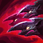
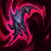
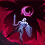
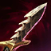

Naafiri Mid
Personalized guide for soup minion#NA1 · Patch 26.13 · July 2026
Labels: VERIFIED multi-source fact-checked · SINGLE SOURCE · REASONING from current-patch numbers, verify in practice tool · YOUR DATA from your 59 Naafiri games this season.
YOUR DATA Mid Naafiri is your best champion: 62% WR this season, 9.5 kills/game. The two leaks keeping the account at Gold 3 are kill participation (~43%; 8 of 28 ranked losses at ≤32%) and losses ending at ~27 min — faster than your wins. You lose games in the mid game while farming away from the map, not late. One skill fixes it: converting lane advantage into map presence, minutes 8–25 (§6–7).

Packmates attack your targets. Damage multiplier, DoT-keystone applicator, and skillshot shields vs mages.
Q1 bleeds; Q2 detonates remaining bleed + missing-health bonus, and heals you vs champions. FGC read: Q1 is the fireball, Q2 the confirm — one input, never drop it. Throw Q1 at committed movement (last-hit steps, cast animations), never at neutral: a whiffed Q1 puts your whole offense on cooldown, so back off like a whiffed DP.
Summons extra packmates and starts a hunt window. All-in steroid — cast before committing so the hounds join the full route.

Dash + two-hit AoE; your gap-closer and only escape. FGC read: spending E to engage while their answer (charm, Zed R) is up is jumping in on a full-meter reversal. In poke lanes, hold E to dodge the return skillshot after your Q.

VERIFIED Champion takedown within 7s of cast → reveal pulse + one free recast within 12s, and the recast grants a 3s shield (100/150/200 + 150% bonus AD). Stack with Axiom Arc's takedown ult-refund: R → kill → shielded free R → kill → half the CD already back. FGC read: the first kill is the knockdown, the recast is your okizeme — pick target #2 before you press R.
Keystone data, Emerald+ mid, 26.13 VERIFIED: Electrocute most-picked (53.65% WR, 23.7k games) · Hail of Blades u.gg's recommended page (50.8% WR, 13.5k) · Deathfire Touch a niche AD-variant page (one sample: 43.2% WR, 3.1k). Your DFT sits at a personal 62% over 38 games — it works, but the aggregate gap says Electrocute is likely free win rate. Suggested split below.
| Primary — Domination | Secondary — Precision | Shards | Build order |
|---|---|---|---|
| Electrocute Sudden Impact Grisly Mementos Treasure Hunter | Presence of Mind Coup de Grace | Adaptive Adaptive Health |  Doran's Blade → Doran's Blade →  Dirk → Voltaic → Voltaic →  Greaves → Greaves →  Axiom Arc → Axiom Arc →  Serylda's → situational (§3) Serylda's → situational (§3) |
YOUR DATA This is your own existing Electrocute page (14 games) — no relearning. Procs off Q1 + packmate hits + one auto/E; rewards your exact poke pattern with front-loaded burst instead of DoT. REASONING on shards/pairing; keystone stats verified.
 SETUP B — Hail of Blades KILL-LANE READS — once the §2b route is muscle memory
SETUP B — Hail of Blades KILL-LANE READS — once the §2b route is muscle memory| Primary — Domination | Secondary — Sorcery | Shards | Build order |
|---|---|---|---|
| Hail of Blades Sudden Impact Sixth Sense Treasure Hunter | Transcendence Scorch | Attack Speed Adaptive Health | Same lethality core: Doran's → Dirk → Voltaic → Greaves → Axiom Arc → Serylda's |
VERIFIED Exact u.gg recommended page (50.8% WR / 13,529 matches), including the rune-by-rune picks. Take into melees and immobile mages you intend to all-in.
 SETUP C — Deathfire Touch COMFORT — heavy-poke lanes where all-ins never happen
SETUP C — Deathfire Touch COMFORT — heavy-poke lanes where all-ins never happen| Primary — Sorcery | Secondary — Precision | Shards | Build order |
|---|---|---|---|
| Deathfire Touch Manaflow Band Transcendence Scorch | Cut Down (or Coup de Grace) Legend: Haste | Adaptive Adaptive Health | u.gg's AD-variant pairing opens  Eclipse, then Voltaic → Axiom Arc → Serylda's Eclipse, then Voltaic → Axiom Arc → Serylda's |
YOUR DATA Your current page (38 games). Know its 26.11 nerf: the burn is now magic-only (was adaptive), so it no longer converts your AD as well. Packmate hits refresh a 1s burn — the DoT is real, but it pays out over seconds your all-ins don't wait for.
HoB does nothing until you commit to auto range — it's a preplanned combo off a conditioning read, the throw after they respect the fireball. Condition minutes 1–5 with normal Q1 poke. The read: they're ~60% and just burned their dash/shield. The route: W (pre-cast) → E in → AA-AA-AA (the three HoB autos — skipping these wastes the keystone) → Q1 → Q2 → R if they flash. Post-6, R opens from 900 range and a kill hands you the shielded recast home. Ten practice-tool reps, then normals until automatic.
| Item | Buy when |
|---|---|
 Edge of Night (3000g) Edge of Night (3000g) | You're dying to one ability on entry (hook, snare, charm) — the spell shield most directly fixes your teamfight deaths. |
 Death's Dance (3300g) Death's Dance (3300g) | Dying to sustained AD (bruisers collapsing on you). |
 Guardian Angel (3200g) Guardian Angel (3200g) | You're fed and the game rests on you. |
 Serpent's Fang (2500g) Serpent's Fang (2500g) | 2+ shielders on their team. |
 Maw of Malmortius (3100g) Maw of Malmortius (3100g) | Fed AP burst threat. |
REASONING — aggregate stats for defensive items are survivorship-biased, so buy for the named problem, not win rate. Slot-4/5 WRs on the core items (Serylda's 57.6%/14.6k, Axiom 60.1%) carry the same caveat.
REASONING from current tooltips (Data Dragon 16.13.1):
| Voltaic Cyclosword — 3000g |  Hubris — 2800g Hubris — 2800g | |
|---|---|---|
| Stats | 55 AD, 10 lethality, 10 haste | 55 AD, 18 lethality, 10 haste |
| Passive | Energized burst on ability hit — unconditional, works every engage | +12 AD (+3/kill) for 90s on takedown — worthless until someone dies |
| Identity | Kills someone from even | Makes kills #2–5 faster; 90s window = fight-every-wave tempo |
Rule: Voltaic is the default. Hubris only when takedowns are already guaranteed — 2–3 kills up before your first completed item in a lane they can't win. Rushing Hubris even is circular: its passive needs kills to give you the stats to get kills.
Gold math: a clean solo kill ≈ 600g swing (300g bounty + ~2 missed waves). Mid legendaries cost 2750–3300g, so ~3 uncontested solo kills ≈ one item of real advantage — at 2–3 kills by first back you're past half an item, which is the Hubris window.
REASONING — assumes the full route lands (both Q casts are the swing factor). Calibrate once per patch: practice-tool dummy at 1800 HP/60 armor (ADC), then 2600/120 (bruiser), run your route, watch the numbers.
| Spike | Squishies | Bruisers | Tanks |
|---|---|---|---|
| Dirk + boots (6–8) | Kill at ≤60–70% | Jungler help only | Never — all guide rows |
| Voltaic done (8–10) | Full-HP with R route — your assassin license | Trade only; kill ≤60% | Serylda's slow is for kiting them, not killing them. Tab check: their armor outgrowing your lethality = off your kill list. |
| + Axiom (2 items) | Kill through Flash (recast catches it) | ≤75% if you E-dodge their key spell | |
| + Serylda's (3 items) | Deleted on sight | Real targets now (35% armor pen) |
YOUR DATA 43% KP, low-KP losses at 27 min: lane won, map lost. This is the section that ranks you up.
Lane: your poke loop is right — Q1 at committed movement, packmates chip, hold E for the answer. Level 1–2 (Q→E) you win extended trades; most mids expect passive Naafiri. The one fix: poke that never becomes a kill, plates, or a roam is noise. Once they hit your §5 threshold, commit or leave — usually leave: shove and spend the advantage elsewhere.
The rule: every wave crash into their tower = you owe the map a decision — roam, invade with jungler, deep ward, or reset. Never stand in lane waiting for the bounce. That wait is the 43%.
REASONING Kills are currency. While they're grey-screened, buy something, in order: 1) Dragon/Herald/Baron · 2) mid tower/plates · 3) sweep + deep wards (the next pick comes from that darkness) · 4) a crashed wave. Never just recall on a kill.
Mid-game loop when ahead (15–25 min): push side wave → ward flank → look mid for a pick with R up → objective off the pick → next side lane. Each lap is 60–90s and gains something. Your losses exit this loop — quiet side-farming while the enemy groups mid. If they group and no pick is available, join your team immediately: a 2-item Naafiri present beats a 3-item Naafiri arriving late.
5k+ lead at 20 min → group mid, take tower, end by ~28. She falls off as teams group SINGLE SOURCE — your best window is mid game, don't bank on late.
| Stage | Naafiri wants (single-source skeleton) | Your focus |
|---|---|---|
| Early (0–8) | Farm, poke, hit items; roams open at 6; play around R timer | Already your best phase — convert poke into something concrete |
| Mid (8–25) | Her prime. Side-lane tower pressure, delete lone squishies, picks with R up, rotate kills into objectives | The KP fix (§6–7). Every crash = a map decision |
| Late (25+) | Falls off as teams group; grouped flanks, one pick ends it | Patient, one clean punish — round-3 discipline. No solo side-lanes |